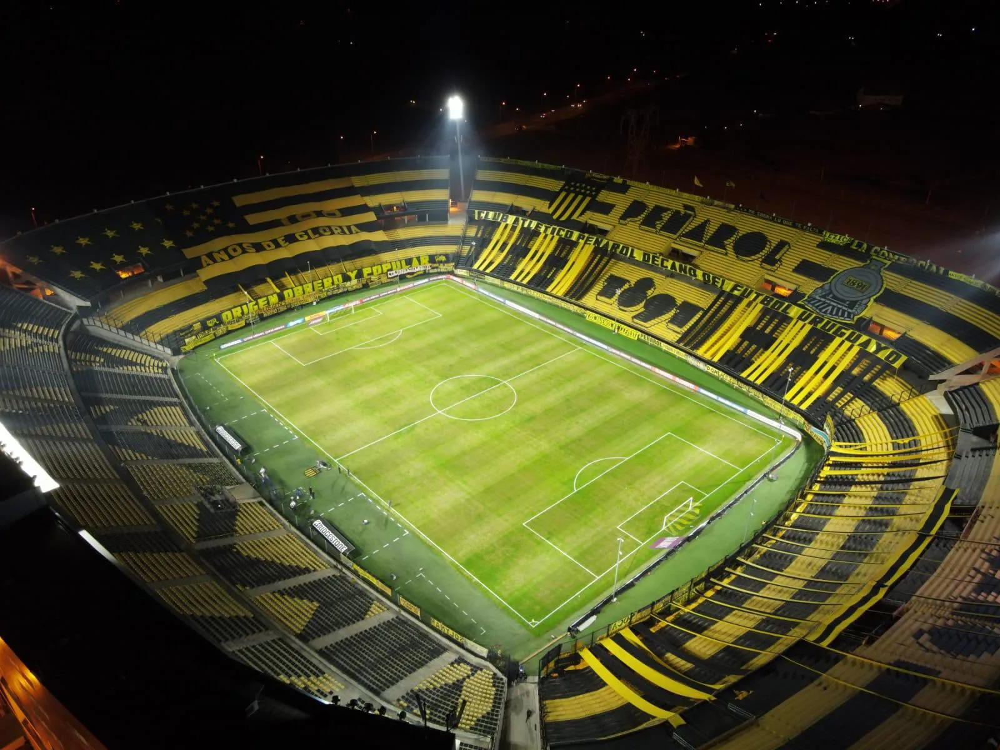

El Estadio Campeón del Siglo es un recinto deportivo propiedad del Club Atlético Peñarol, ubicado en la localidad de Bañados de Carrasco, en el departamento de Montevideo, Uruguay, en la Ruta 102 entre camino Mangangá y camino de los Siete Cerros. El estadio tiene una capacidad para 42 700 personas sentadas, (38 000 en las tribunas y 4000 en palcos), distribuidas entre las cuatro tribunas: tribuna Frank Henderson (tribuna norte), tribuna José Pedro Damiani (tribuna sur), tribuna Washington Cataldi (tribuna oeste) y tribuna Gastón Güelfi (tribuna este), que deben sus nombres a dirigentes vinculados con la historia del club. Desde la inauguración del escenario mirasol, en 2016, los Carboneros han disputado un total de 21 partidos en condición de locales, obteniendo 17 victorias, 3 empates y tan solo una derrota. Son 54 de 63 puntos obtenidos en su cancha, un porcentaje del 85.7% de efectividad. El único equipo que supo ganarle a Peñarol en su casa por Libertadores fue Palmeiras, en 2017
